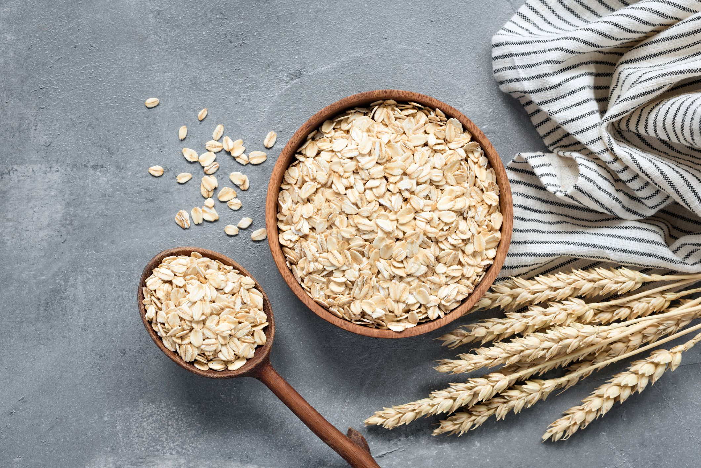

CHICKPEA (Bengal gram):
Introduction

There are two main types of chickpeas: desi (small, angular seeds with a rough coat) and kabuli (large, smooth-coated seeds). Desi chickpeas are more commonly grown in India, while kabuli chickpeas are popular in the Mediterranean region and other parts of the world.
Here is an introduction to chickpea (Bengal gram):
Chickpea (Cicer arietinum) is an important pulse crop cultivated in many parts of the world, including India. It is a cool-season legume that belongs to the family Fabaceae (Leguminosae). Chickpeas are also known by various other names, such as garbanzo beans, Egyptian peas, and kadala (in Karnataka).
Chickpeas are believed to have originated in the Mediterranean region and have been cultivated for thousands of years. They are one of the oldest cultivated crops, with evidence of their cultivation dating back to around 7000 B.C. in the Middle East.
Chickpeas are highly nutritious, with a high protein content (up to 25%), complex carbohydrates, dietary fiber, and essential vitamins and minerals like folate, iron, and zinc. They are also a good source of antioxidants and have been associated with various health benefits, including improved digestion, blood sugar regulation, and heart health.
In India, chickpeas are a staple ingredient in many traditional dishes, such as chana masala, chole bhature, and kadala curry. They are also used in the preparation of snacks like roasted chickpeas (chana chur) and chickpea flour (besan) for various savory and sweet dishes.
Chickpeas are primarily grown as a rabi (winter) crop in India, with major production states being Madhya Pradesh, Rajasthan, Maharashtra, and Karnataka. In Karnataka, chickpeas are an important rabi crop, particularly in the northern and central regions of the state.
With their high nutritional value, versatility in culinary applications, and ability to fix atmospheric nitrogen (beneficial for soil fertility), chickpeas play a crucial role in Indian agriculture and contribute significantly to food security and sustainable farming practices.
Nutritions
Here are some key nutritional facts about chickpeas (garbanzo beans):
- Chickpeas are an excellent source of plant-based protein, providing around 15g of protein per cooked cup (164g).
- They are high in fiber, with around 12.5g of fiber per cooked cup. The fiber is a mix of insoluble and soluble fiber.
- Chickpeas are a good source of several vitamins and minerals:
- Folate: 52% of the daily value (DV)
- They Iron: 26% of the DV
- They Phosphorus: 29% of the DV
- They Zinc: 18% of the DV
- contain antioxidants like polyphenols, phytic acid and vitamin E.
- Chickpeas have a low glycemic index, meaning their carbohydrates are absorbed relatively slowly which can help control blood sugar levels.
- They are low in fat and calories with around 270 calories and 4g of fat per cooked cup.
- Chickpeas are also a good source of complex carbohydrates and provide energy from starch.
Overall, chickpeas are a highly nutritious legume that is high in protein, fiber, vitamins, minerals and antioxidants. They make an excellent addition to vegetarian, vegan and plant-based diets.
Soil And Nutrients
For successful cultivation of chickpeas (Bengal gram) in Karnataka, the soil should ideally contain the following essential components:
For successful cultivation of chickpeas (Bengal gram) in Karnataka, the soil should ideally contain the following essential components:
- Organic Matter:
Chickpeas grow well in soils with a moderate level of organic matter (around 1-2%). Organic matter improves soil structure, water-holding capacity, and nutrient availability. Incorporating well-decomposed farmyard manure, compost, or green manure into the soil before sowing can help enhance organic matter content.
- Nitrogen:
Chickpeas have a moderate requirement for nitrogen. Although chickpeas can fix atmospheric nitrogen through their symbiotic relationship with Rhizobium bacteria, they still require some nitrogen from the soil. The soil should have adequate nitrogen levels, typically around 20-25 kg/ha.
- Phosphorus:
Phosphorus is essential for root development, nodulation, and overall plant growth in chickpeas. The soil should have a phosphorus level of around 40-60 kg/ha for optimal growth.
- Potassium:
Potassium plays a crucial role in drought tolerance, disease resistance, and overall plant vigor in chickpeas. The soil should have a potassium level of around 25-30 kg/ha.
- Calcium and Magnesium:
Chickpeas require adequate levels of calcium and magnesium for proper growth and nodulation. These nutrients are particularly important in soils with high salinity or alkalinity levels.
- Micronutrients:
Micronutrients like iron, zinc, boron, and molybdenum are essential for chickpea growth and development. Deficiencies in these micronutrients can lead to stunted growth and reduced yields.
- Soil pH:
Chickpeas prefer a slightly alkaline soil with a pH range of 6.5-8.5. Soils with a pH above 8.5 or below 5.5 can lead to nutrient deficiencies and poor growth.
- Soil Texture:
Chickpeas grow best in well-drained, sandy loam or loamy soils with good water-holding capacity. Heavy clay soils or excessively sandy soils may not be suitable for chickpea cultivation.
It's essential to conduct soil testing before planting chickpeas to determine the nutrient levels and pH, and then apply appropriate amendments or fertilizers as recommended by local agricultural experts or extension services. This will ensure that the soil provides the essential nutrients required for optimal growth and yield of chickpeas in Karnataka.
How To Plant Chickpeas

Planting chickpeas can be a rewarding experience! Here's a basic guide to get you started:
-
Choose the Right Time: Chickpeas prefer cooler temperatures, so it's best to plant them in early spring or late summer to early fall, depending on your climate.
- Select a Location: Pick a sunny spot in your garden with well-draining soil. Chickpeas don't like waterlogged soil, so ensure good drainage.
- Prepare the Soil: Work the soil to a depth of about 6-8 inches, removing any rocks, weeds, or debris. Add compost or aged manure to enrich the soil with nutrients.
- Planting Seeds: Plant chickpea seeds about 1 inch deep and 3-4 inches apart in rows, or you can plant them in hills with 2-3 seeds per hill if you prefer.
- Watering: Keep the soil consistently moist but not waterlogged. Water deeply when the top inch of soil feels dry.
- Support: Chickpea plants can benefit from support as they grow. You can use stakes or a trellis for support, especially for larger varieties.
- Fertilizing: If your soil lacks nutrients, you can fertilize with a balanced fertilizer according to the package instructions.
- Weeding and Mulching: Keep the area around your chickpea plants weed-free to reduce competition for nutrients. Mulching can help retain soil moisture and suppress weeds.
- Pests and Diseases: Monitor your plants for pests like aphids or diseases like powdery mildew. Use organic pest control methods if needed.
- Harvesting: Chickpeas are typically ready for harvest in about 90-100 days after planting. Harvest when the pods are dry and brittle, then remove the beans from the pods.
With proper care and attention, you should have a successful chickpea harvest!
Fertilizing
Fertilizing chickpeas can help ensure they have the nutrients they need for healthy growth and a good yield. Here are some tips for fertilizing when planting chickpeas:
- 1.Soil Testing:Before planting, it's a good idea to test your soil to determine its nutrient levels. This can guide you in choosing the right type and amount of fertilizer.
- Organic Matter: Incorporate organic matter into the soil, such as compost or well-aged manure, before planting. This helps improve soil structure and provides a slow release of nutrients.
- Nitrogen:Chickpeas are legumes and can fix nitrogen from the air with the help of nitrogen-fixing bacteria in their root nodules. They generally don't require a lot of additional nitrogen fertilizer, especially if the soil is already fertile.
- Phosphorus and Potassium: Chickpeas benefit from phosphorus and potassium for root development, flowering, and pod formation. A balanced fertilizer with an N-P-K ratio suited for legumes (e.g., 5-10-10) can be applied at planting time according to package instructions.
- Side-Dressing: As chickpea plants grow, you can side-dress them with a nitrogen-rich fertilizer if needed, but be cautious not to over-fertilize, which can lead to excessive foliage growth at the expense of pod development.
- Mulching: Mulching with organic materials like straw or shredded leaves can help retain soil moisture and gradually release nutrients as they break down, reducing the need for additional fertilization.
- Avoid Excess: Chickpeas are sensitive to over-fertilization, especially with nitrogen, which can lead to lush foliage but poor pod development. Follow recommended rates and avoid applying fertilizers too close to the plants' stems.
By providing the right balance of nutrients and avoiding excesses, you can help your chickpea plants thrive and produce a healthy harvest.